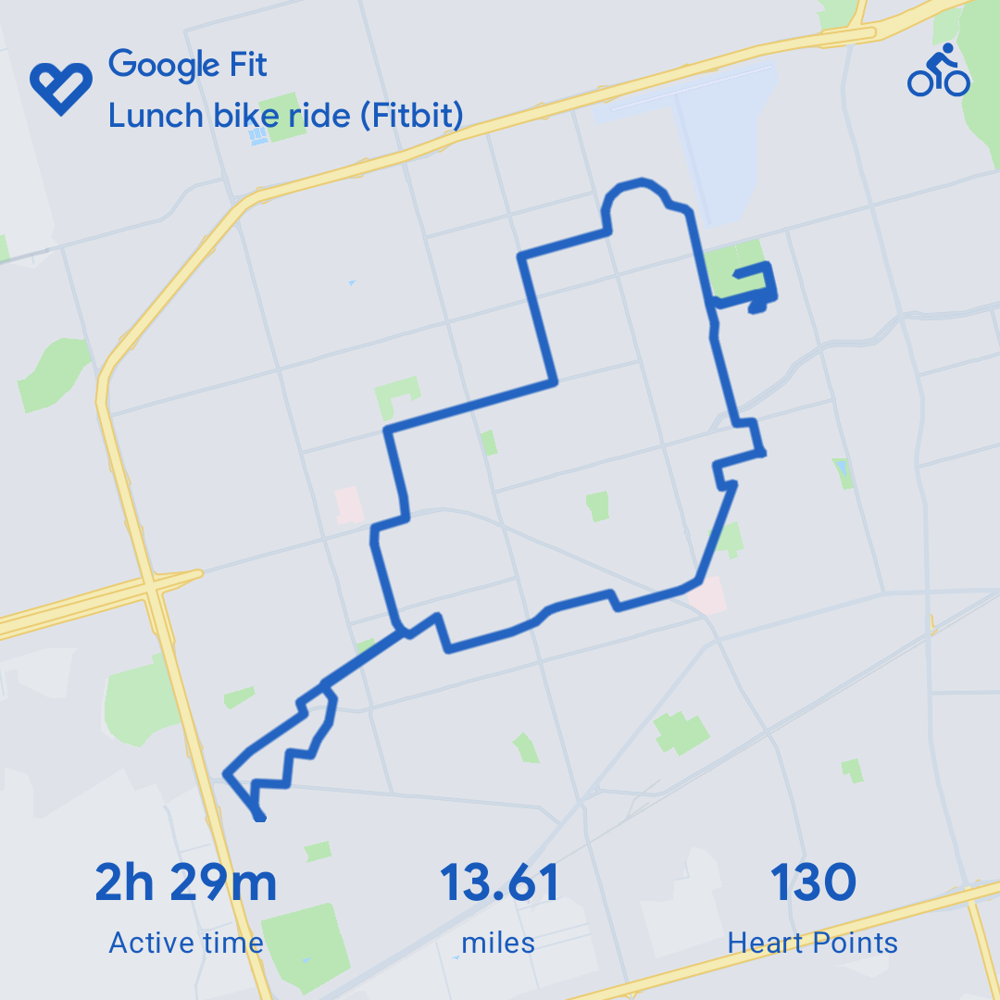

May 2 Ride
Posted:
Currently reading:
Nothing
Currently binging: Enterprise
Current music genre: 50 Shades of Gray soundtrack
So yesterday The Mrs went for a massage and rode her e-bike from the massage therapist over to her workplace. I met up with her at the workplace on my e-bike and then we maundered all over town.
We rode over to the playa and had a picnic lunch. We hung out at the park for a long while watch people amble around the park on a beautiful spring afternoon. We were especially enamoured of two boys who were just walking around the duck pond exploring whatever was there for them to explore and chasing the food seeking ducks away much to our amusement and the agitation of the ducks.
After lunch had settled we hopped on the e-bikes and worked our way around town, just leisurely goofing off. The clouds started rolling and I was getting cold. It got up to about 70 eventually yesterday but while we were out riding it was in the lower 60s. I decided that I needed to aim back to the house before I froze to death.
As I am sure you would figure, the second we turned towards the house the sun came out from the clouds and I was sweating like crazy and thought I might dehydrate and turn to dust before we got back to the house.
We ended up stopping by my sister's house for about an hour. She had some brussell sprouts for our son, who for some reason that defies genetics, likes the nasty things.
While at my sister's we got all the gossip out in the open and solved all the world's pressing problems. So now you don't have to worry about all of that, which is one of the many public services that I provide. ;-)
More of a note to myself here than anything you need to know: the Google fit thing says I rode 13.6 miles or so but the odometer on the e-bike says that I rode just a little under 18 miles. Something is out of whack here.
Reply via email
Follow with RSS